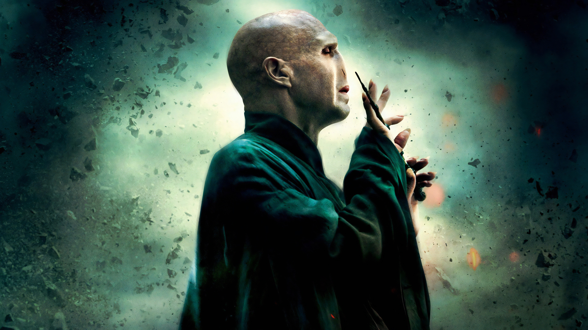

Tom Marvolo Riddle
23.09.2026
Tom Marvolo Riddle (31.12.1926 - 02.05.1998), later known as Lord Voldemort or, alternatively as the Dark Lord, You-Know-Who, He Who Must Not Be Named, or, just simply Voldemort, was an English half-blood wizard considered to have been the most powerful and dangerous Dark wizard of all time. He was amongst the greatest wizards to have ever lived, rivalled only by Albus Dumbledore. Descended from Salazar Slytherin on his mother's side, through the House of Gaunt, Tom Riddle was conceived whilst his father, Tom Riddle Senior, was under the effects of a love potion supplied by his mother, Merope Gaunt. When the enchantment was lifted, Tom's father abandoned his pregnant wife and returned to Little Hangleton. His mother gave birth to him, before dying an hour later. Her only wishes were that he'd look like his father, and that he was named Tom after his father, his middle name Marvolo after her father, and that Riddle would be his last name. Tom Marvolo Riddle was raised in the Muggle-run Wool's Orphanage.
